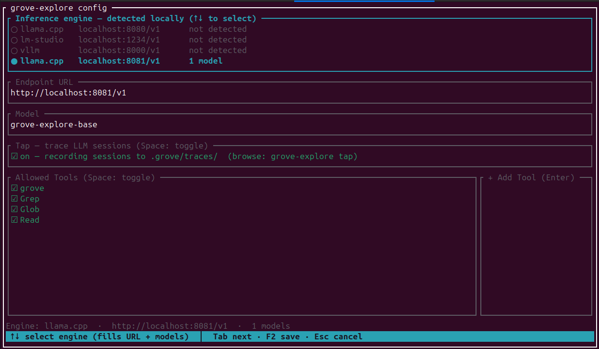
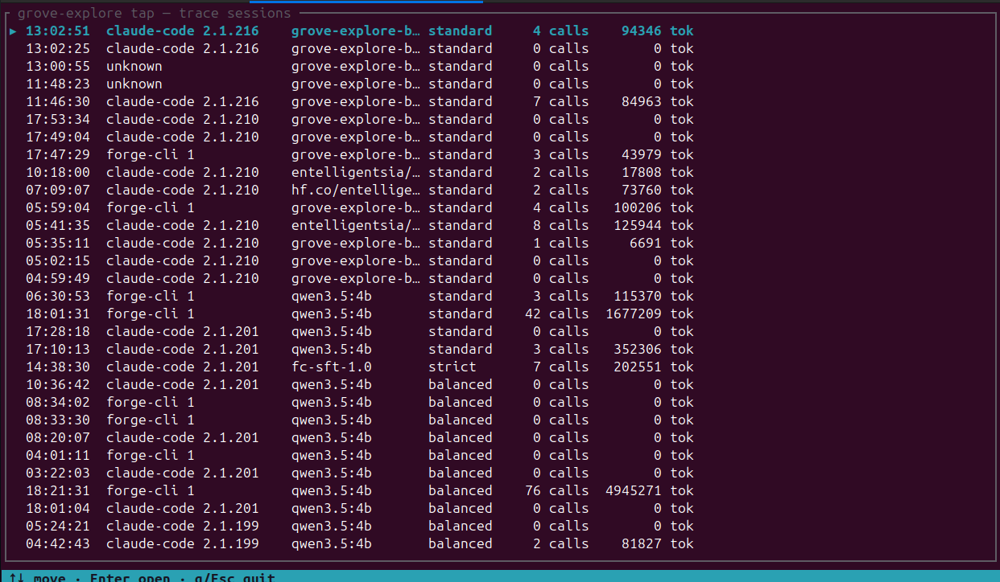
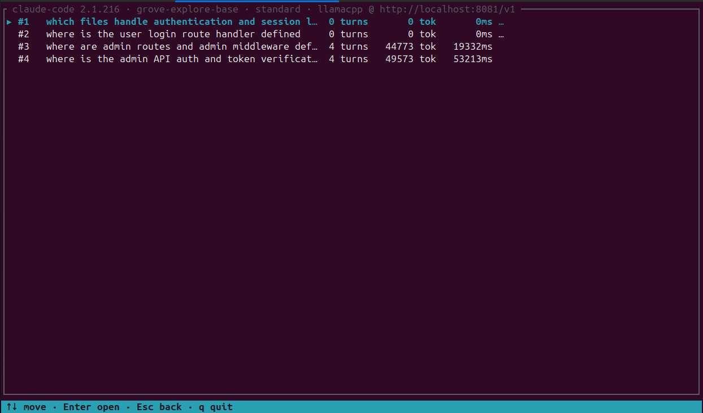
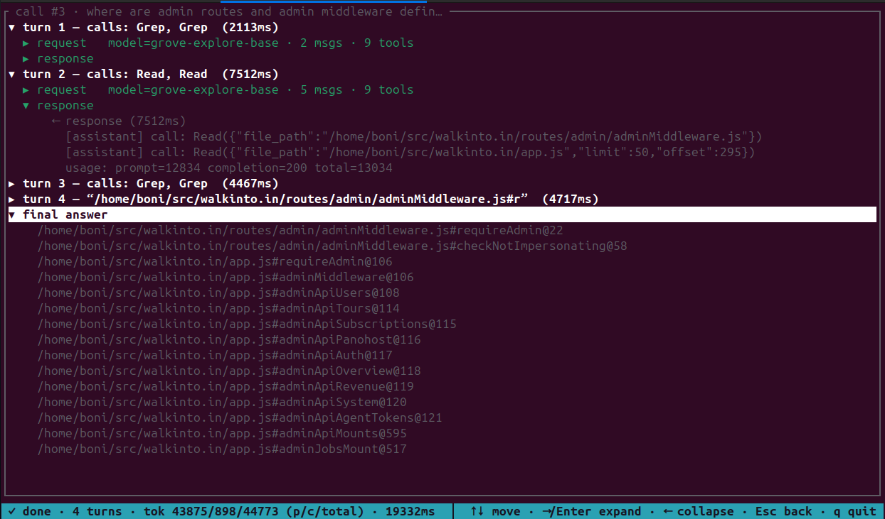
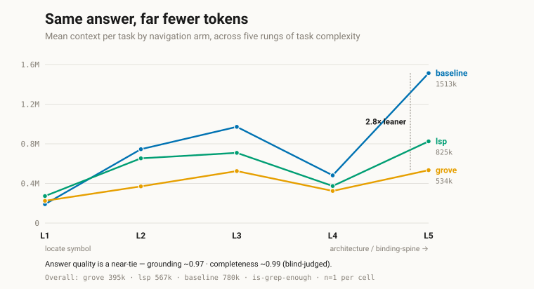

Structural sight for coding agents
Ask where.Get exact lines.
Agents burn tokens grepping and reading whole files to answer where is this defined, who calls it. grove answers with the exact bytes of one symbol — behind a stable id it reuses across turns.
grove outline src/server.py
- class Server py:src/server.py#Server@12
- def __init__ py:src/server.py#Server.__init__@14
- def handle_request py:src/server.py#Server.handle_request@31
- def main py:src/server.py#main@88
grove source "py:src/server.py#Server.handle_request"
def handle_request(self, req: Request) -> Response:
"""Processes incoming HTTP requests structurally."""
handler = self.router.match(req.path)
return handler(req)
The whole loop: outline a file to a skeleton of ids, then pull one id's exact bytes. Never the whole file.
The unit of exchange
One line, four facts
Every tool — structural or delegated — answers in the same shape. It is the id you pass to the next call, so an agent can carry a location across turns without re-deriving it.
Lines are 1-based, the grep -n convention. Pass the whole
string back to source to read that symbol's body, or to
callers to find its call sites.
The core surface
Seven tools, one working loop
Shaped around what an agent actually does: orient in a repo, find a name, read exactly one thing, trace it, and verify the edit. Every one returns ids you feed to the next.
Orient
grove outline <file>
Generates a file definition skeleton (kind · name · parent · signature · id). Gives the agent structural overview without reading whole files.
grove outline src/server.py
class Server 12:0 py:src/server.py#Server
def __init__ 14:4 py:src/server.py#Server.__init__
def handle_request 31:4 py:src/server.py#Server.handle_request
def main 88:0 py:src/server.py#main
Add --json to any command for the agent-facing shape. The
same seven are the MCP tool surface, so you and your agent see
identically. Full reference: Tools.
Optional second surface
And when you don't know the name yet
The seven tools want a name. When you don't have one — "which
files handle billing?" — there's a second, optional surface:
grove-explore, a locator backed by a small local model.
A project registers one surface or the other, never both; running both
puts eight tools in front of your agent with no rule for choosing.
grove init --as mcp default
Structural
The seven tools above. Deterministic, milliseconds, no model and no network. Your agent navigates by name and reads exact byte ranges. Start here — it is what most projects want, and the only surface that costs nothing to run.
- outline · symbols · source
- callers · definition · map
- check
grove init --as mcp-llm
Delegated
One tool. A small local model sweeps the tree with grove's own structural tools plus glob/grep/read, and hands back validated citations. Use it when you don't yet know which file to open.
- mcp__grove-explore__explore
- runs on your machine, not an API
- read the cited lines yourself
Switching modes swaps the registration — grove init strips
the surface you left. The delegated mode needs a local inference server;
if it isn't running, explore says so in its reply rather
than failing silently.
The delegate
grove-explore-base
The locator model, published as GGUF. It is an off-the-shelf Qwen3.5-4B base — self-converted and quantized, adopted as grove's delegate. Not a fine-tune, and the model card says so plainly.
| Quant | Size | Coverage | Role |
|---|---|---|---|
| Q4_K_M | 2.78 GB | 80.6 | default |
| Q8_0 | 4.6 GB | 82.1 | eval baseline |
Serve with thinking on — with it off the model emits empty tool calls. Context 24,576 · temperature 0. Model card →
llama.cpp — serves the GGUF straight from HuggingFace
llama serve -hf entelligentsia/grove-explore-base-GGUF:Q4_K_Mollama — needs 0.32 or newer
ollama pull bonigopalan/grove-explore-base:q4_k_mPoint grove at it
grove init --as mcp-llm // opens the config screenThe screen finds a running engine on the usual ports and fills in the endpoint and model for you. Weights live on HuggingFace and ollama; the release surface is in grove-models.
Set up and inspect
You can see what it did
Delegation is only trustworthy if you can audit it. Turn on tracing and every session is recorded — the questions asked, the tools called each turn, the tokens spent, and the answer returned.




Start
Three commands
Install
curl -fsSL https://raw.githubusercontent.com/Entelligentsia/grove/main/install.sh | sh
Detects your platform and verifies the checksum. Installs both
grove and grove-explore. Homebrew, npm and
cargo also work — see Install.
Wire it into a project
cd your-project && grove init
Detects your languages, fetches their grammars, pins
grove.lock, and registers grove with every coding agent
it finds — Claude Code, Cursor, Codex, Gemini CLI, Windsurf, VS Code
— each at its own config path, plus a steering note so the agent
reaches for grove instead of grep.
Ask a where question
Start a fresh session and ask something locational —
"where is provision_project defined, and who calls
it?" It routes through grove instead of grep. That's the whole
setup.
Measured, blind-judged
Same answers, half the context
Three navigation regimes — text search, grove, and an LSP — given the same agent the same prompt across 50 tasks: 10 large real repos × 5 rungs of climbing difficulty. One variable.

~2×
leaner on context overall — 395K mean tokens against 780K for text search, at tied answer quality.
2.8×
leaner on the hardest architecture traces, where the lead widens rather than narrows.
L1
is where grove loses. Locating one symbol, plain text search is cheaper — the structural call overhead is fixed.
Full methodology, per-repo data, blind judgements and every raw transcript: is-grep-enough · live dashboard.
Coverage
27 languages, no recompile
Grammars are WASM, fetched at runtime from a hosted registry and pinned
in grove.lock. Adding a language is a registry entry, not a
new build — so the binary you installed already supports what ships next.
bash · c · c++ · c# · go · java · javascript · julia · php · python · ruby · rust · scala · typescript · tsx · agda · codeql · css · embedded template · haskell · html · jsdoc · json · ocaml · ocaml interface · regex · verilog